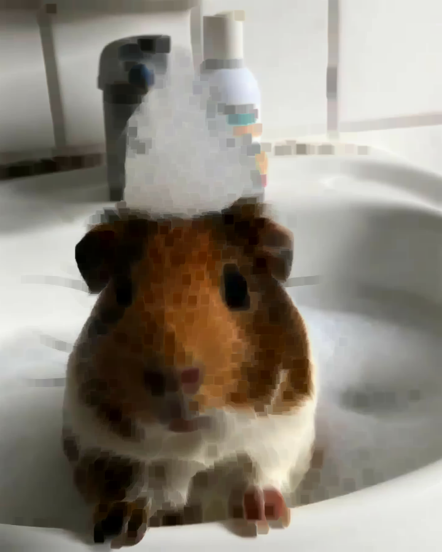
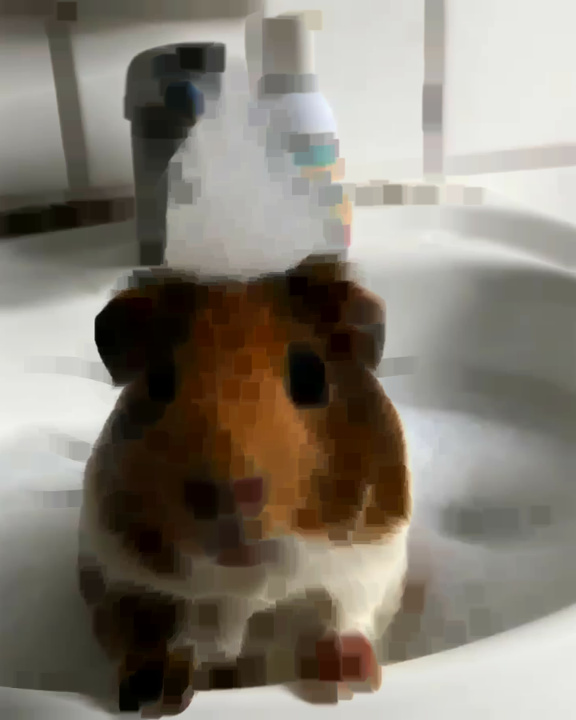
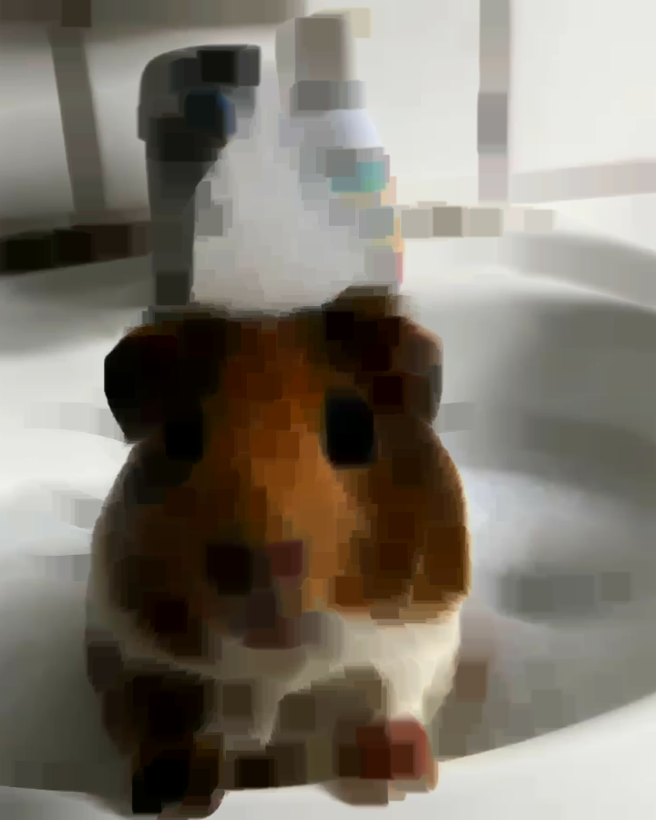
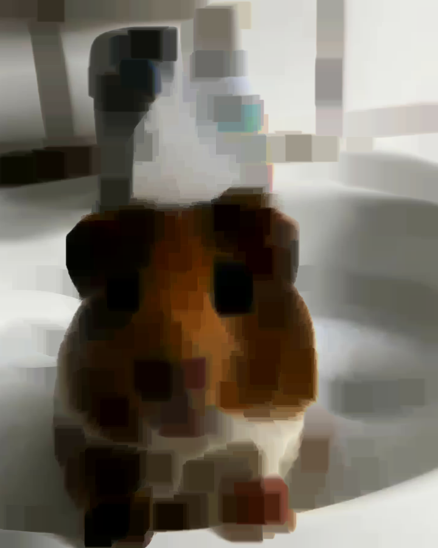
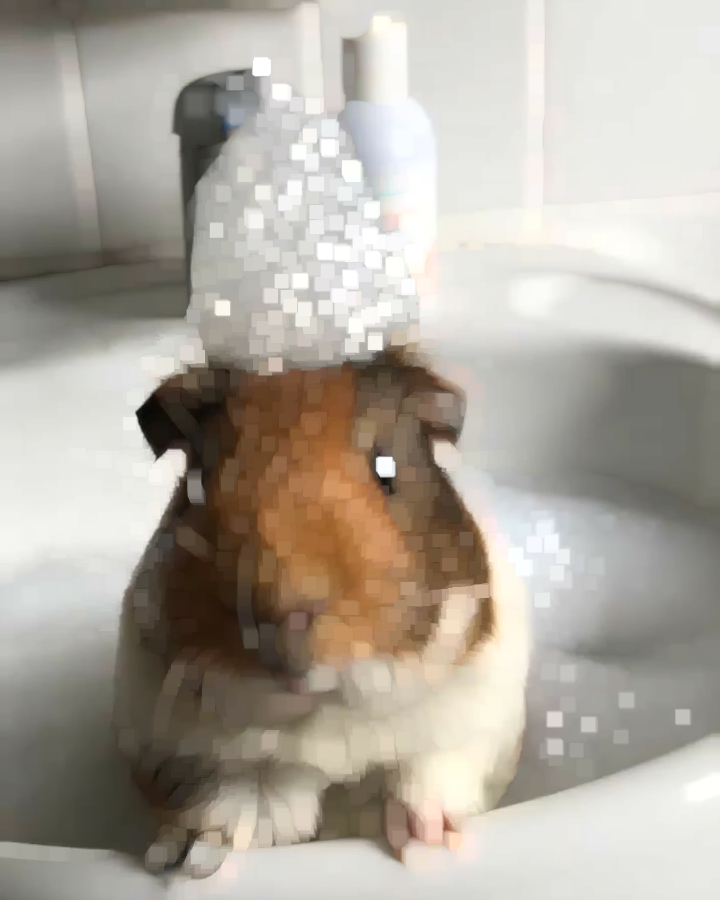
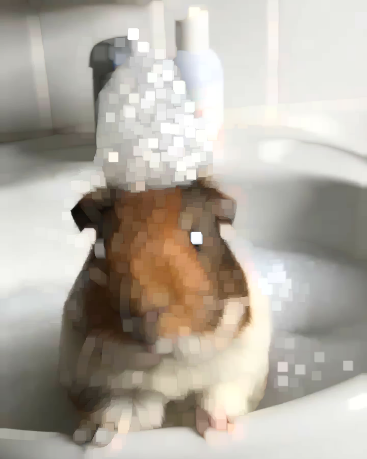
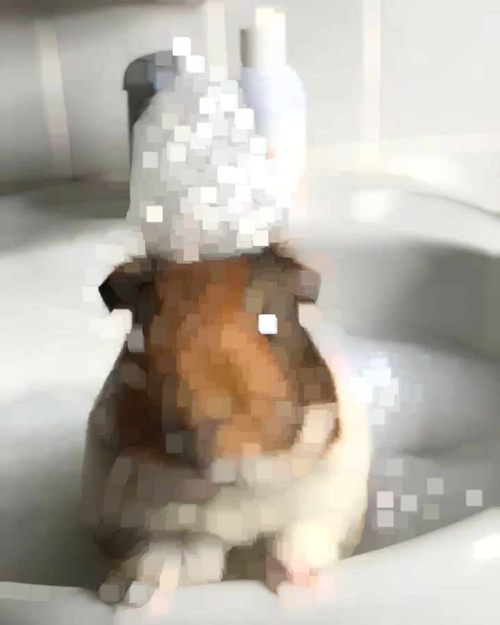
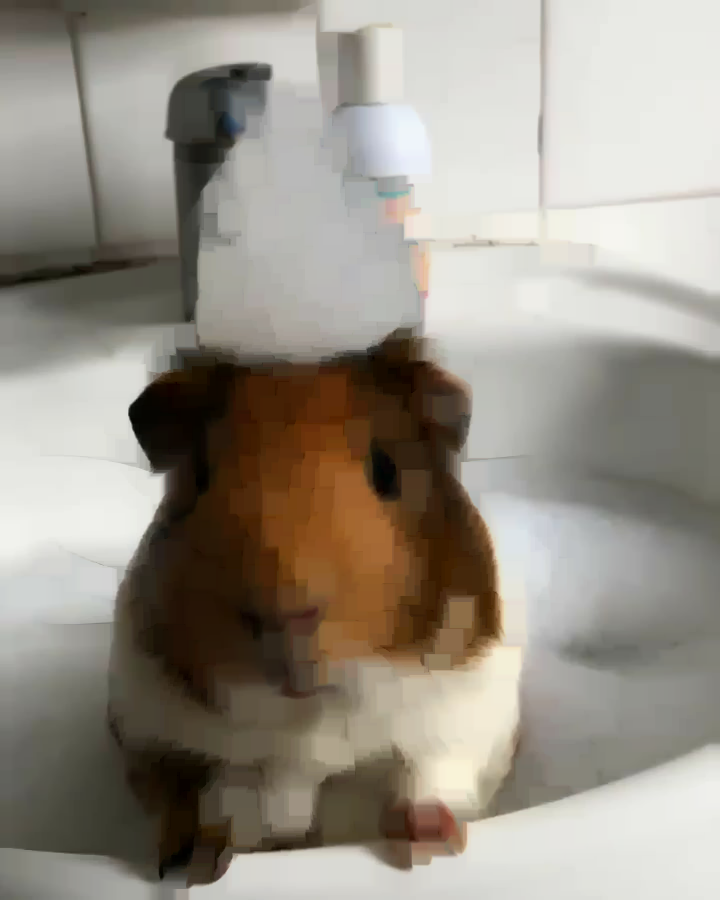

Морфологические операции
Описание и синтаксис
Морфологические операции применяются для обработки бинарных изображений. Они используются для удаления шумов, заполнения пробелов и анализа структуры объектов.
Основные функции:
cv2.erode: эрозия — уменьшает объекты.cv2.dilate: дилатация — увеличивает объекты.cv2.morphologyEx: комбинации операций, такие как открытие и закрытие.
Синтаксис:
result = cv2.erode(image, kernel, iterations)
result = cv2.dilate(image, kernel, iterations)
result = cv2.morphologyEx(image, operation, kernel)image: входное изображение.kernel: ядро операции (матрица).iterations: количество повторений операции.operation: тип операции (cv2.MORPH_OPEN,cv2.MORPH_CLOSEи др.).
import cv2
import numpy as np
# Загрузка изображения
image = cv2.imread("example3.jpg")
# Проверка, удалось ли загрузить изображение
if image is None:
print("Ошибка: не удалось загрузить изображение.")
else:
# Определение ядра для морфологических операций
kernel = np.ones((5, 5), np.uint8) # Ядро 5x5 из единиц
# Количество итераций
iterations = 1
# Применение эрозии
eroded = cv2.erode(image, kernel, iterations=iterations)
# Применение дилатации
dilated = cv2.dilate(image, kernel, iterations=iterations)
# Применение морфологической операции (например, открытие)
operation = cv2.MORPH_OPEN # Вы можете выбрать другую операцию
morph_result = cv2.morphologyEx(image, operation, kernel)
# Сохранение или отображение результатов
cv2.imwrite("eroded.jpg", eroded)
cv2.imwrite("dilated.jpg", dilated)
cv2.imwrite("morph_result.jpg", morph_result)
# Отображение изображений (по желанию)
cv2.imshow("Eroded", eroded)
cv2.imshow("Dilated", dilated)
cv2.imshow("Morphological Result", morph_result)
cv2.waitKey(0)
cv2.destroyAllWindows()
Исходное изображение:
Эрозия:
Дилатация:
Комбинация:
Рассмотрим подробнее:
Эрозия
# Загрузка изображения
image = cv2.imread("example3.jpg")
# Проверка, удалось ли загрузить изображение
if image is None:
print("Ошибка: не удалось загрузить изображение.")
else:
# Определение ядра для морфологических операций
kernel = np.ones((5, 5), np.uint8) # Ядро 5x5 из единиц
for i in {1, 3, 5, 7, 10}:
# Количество итераций
iterations = i
# Применение эрозии
eroded = cv2.erode(image, kernel, iterations=iterations)
# Отображение изображений с помощью cv2_imshow
cv2_imshow(eroded)
Исходное изображение:
i = 1
i = 3:
i = 5:
i = 7:
i = 10:
Если вы увеличите количество итераций, эффект будет более заметным: объекты будут продолжать уменьшаться, и мелкие детали могут быть полностью удалены. Это полезно, если необходимо удалить шум или разделить объекты, которые слишком близко друг к другу.
Дилатация
# Загрузка изображения
image = cv2.imread("example3.jpg")
# Проверка, удалось ли загрузить изображение
if image is None:
print("Ошибка: не удалось загрузить изображение.")
else:
# Определение ядра для морфологических операций
kernel = np.ones((5, 5), np.uint8) # Ядро 5x5 из единиц
for i in {1, 2, 3, 4, 5}:
# Количество итераций
iterations = i
# Применение делатации
dilated = cv2.dilate(image, kernel, iterations=iterations)
# Отображение изображений с помощью cv2_imshow
cv2_imshow(dilated)
Исходное изображение:
i = 1
i = 2:
i = 3:
i = 4:
i = 5:
Если вы увеличите количество итераций, эффект будет более заметным: объекты будут продолжать увеличиваться, что может быть полезно для соединения близко расположенных объектов или заполнения пробелов.
Операция закрытия
# Загрузка изображения
image = cv2.imread("example3.jpg")
# Проверка, удалось ли загрузить изображение
if image is None:
print("Ошибка: не удалось загрузить изображение.")
else:
# Определение ядра для морфологических операций
kernel = np.ones((5, 5), np.uint8) # Ядро 5x5 из единиц
for i in {1, 2, 3, 4, 5}: # Используйте квадратные скобки для списка
# Количество итераций
iterations = i
# Применение морфологической операции (например, открытие)
operation = cv2.MORPH_OPEN # Вы можете выбрать другую операцию
morph_result = cv2.morphologyEx(image, operation, kernel, iterations=iterations)
# Отображение изображений с помощью cv2_imshow
cv2_imshow(morph_result)
cv2.destroyAllWindows() # Закрыть все окна после завершения
Исходное изображение:
i = 1
i = 2:
i = 3:
i = 4:
i = 5:
Объекты становятся более целостными, и мелкие отверстия заполняются. При большом количестве итераций объекты могут сливаться друг с другом.